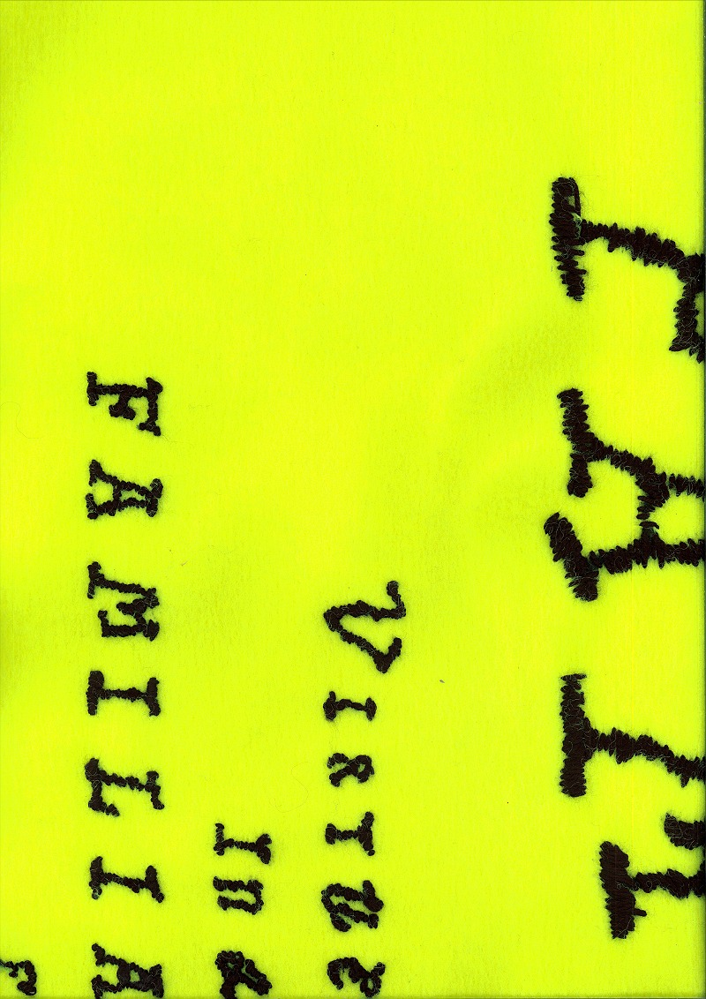
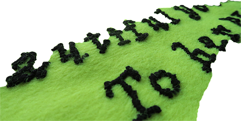
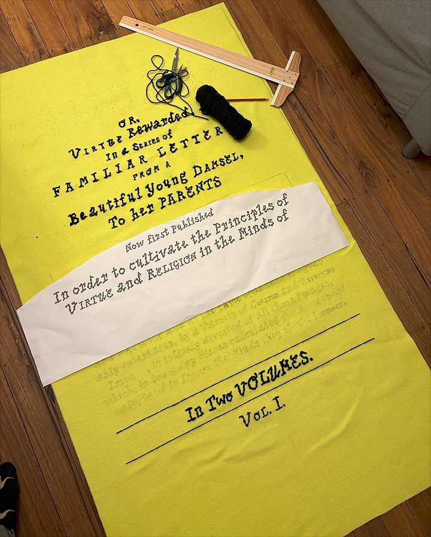
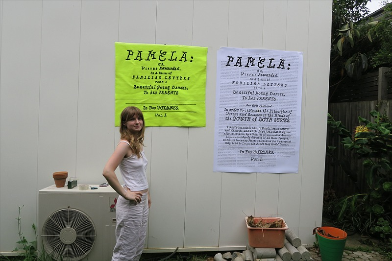

Pamela, or Virtue Rewarded, is another of my previous projects exploring womanhood, coming of age as a young woman, typography on textiles and retelling of classic stories. In this project, which you can read about on my portfolio website, I hand embroidered a tapestry. This was a step forward in my exploration of combining typography and textiles, where I used cartooning (poking holes in a guide and dusting with charcoal to transfer a design) and hand embroidery with yarn to be able to recreate a typeface with a high level of fidelity.




make space!